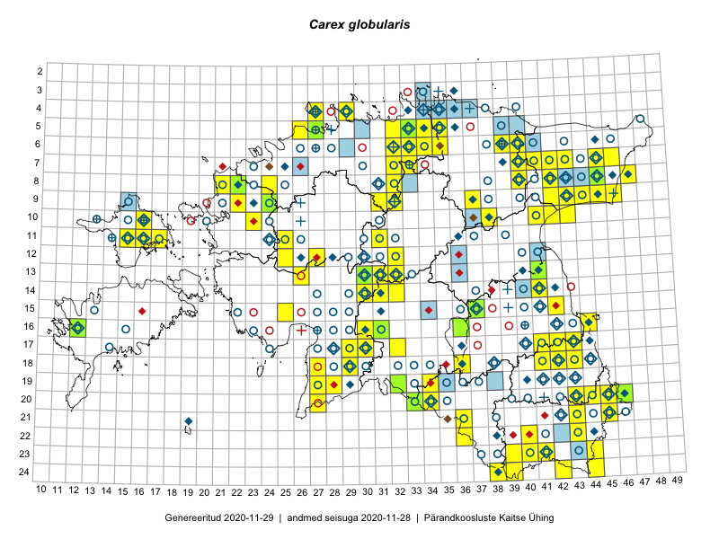

Carex globularis — keratarn
Kaardile koondatud taksonid: Carex globularis L. (153)

Kaart põhineb 153 kirjel, neist:
vaatlusi 139
eksemplare 14
Kaasaegsed1 leiukohad asuvad 102 ruudus.
Andmed “Eesti taimede levikuatlasest”,2 sulgudes ruutude arv:3
● 1971–2005 (117)
○ 1921–1970 (104)
△ kuni 1920 (2)
+ hävinud (0)
? kaheldav (0)
Lisaruudud teistest andmebaasidest:4
ELF: 2006– . . . (25)
PKÜ: 2006– . . . (0)
ELF: 1971–2005 (8)
PKÜ: 1997–2005 (0)
| Ruut | Vaatleja(d) | Vaatlusaeg | Kirje PlutoFis |
|---|---|---|---|
| 07-42 | Toomas Kukk, Peedu Saar | 2014-09-25 | ruut/ala: Carex globularis L. |
| 14-41 | Peedu Saar, Ott Luuk | 2015-06-21 | ruut/ala: Carex globularis L. |
| 24-44 | Ott Luuk, Peedu Saar | 2015-08-13 | ruut/ala: Carex globularis L. |
| 05-35 | Rein Kalamees, Kersti Püssa | 2015-08-16 | ruut/ala: Carex globularis L. |
| 10-16 | Thea Kull | 2015-06-15 | ruut/ala: Carex globularis L. |
| 09-44 | Ott Luuk, Hannes Pehlak | 2015-07-24 | ruut/ala: Carex globularis L. |
| 17-41 | Thea Kull, Peedu Saar | 2015-06-19 | ruut/ala: Carex globularis L. |
| 17-30 | Ott Luuk, Hannes Pehlak | 2015-06-11 | ruut/ala: Carex globularis L. |
| 17-43 | Thea Kull, Eerik Leibak | 2015-07-05 | ruut/ala: Carex globularis L. |
| 07-43 | Toomas Kukk, Peedu Saar | 2014-09-10 | ruut/ala: Carex globularis L. |
| 07-41 | Thea Kull, Eerik Leibak | 2015-09-10 | ruut/ala: Carex globularis L. |
| 17-32 | Maria Abakumova, Tiit Hallikma | 2015-07-09 | ruut/ala: Carex globularis L. |
| 16-12 | Mari Reitalu | 2015-06-28 | ruut/ala: Carex globularis L. |
| 09-32 | Ott Luuk, Toivo Sepp | 2015-08-18 | ruut/ala: Carex globularis L. |
| 19-32 | Maria Abakumova, Helle Mäemets | 2015-05-23 | ruut/ala: Carex globularis L. |
| 06-40 | Thea Kull, Meeli Mesipuu, Eerik Leibak | 2014-07-11 | ruut/ala: Carex globularis L. |
| 13-30 | Meeli Mesipuu, Timo Luhamäe | 2015-06-10 | ruut/ala: Carex globularis L. |
| 06-39 | Kaili Orav, Silvia Pihu | 2015-07-20 | ruut/ala: Carex globularis L. |
| 24-39 | Toomas Kukk, Peedu Saar, Kersti Püssa, Rein Kalamees | 2014-06-09 | ruut/ala: Carex globularis L. |
| 07-40 | Thea Kull, Eerik Leibak | 2014-07-11 | ruut/ala: Carex globularis L. |
| 11-25 | Hanna-Eliisa Luts, Tõnu Ploompuu | 2015-07-28 | ruut/ala: Carex globularis L. |
| 09-42 | Tõnu Ploompuu | 2015-08-26 | ruut/ala: Carex globularis L. |
| 08-24 | Sirje Lagle, Tõnu Ploompuu | 2015-08-18 | ruut/ala: Carex globularis L. |
| 20-27 | Thea Kull, Peedu Saar | 2016-06-06 | ruut/ala: Carex globularis L. |
| 13-41 | Kai Rünk, Ülle Jõgar, Illi Tarmu | 2016-06-10 | ruut/ala: Carex globularis L. |
| 21-45 | Toomas Kukk, Tiit Hallikma, Johannes Kõdar | 2016-06-14 | ruut/ala: Carex globularis L. |
| 17-43 | Rein Kalamees, Eerik Leibak | 2016-06-13 | ruut/ala: Carex globularis L. |
| 24-42 | Rein Kalamees, Eerik Leibak | 2016-06-14 | ruut/ala: Carex globularis L. |
| 22-43 | Toomas Kukk, Tiit Hallikma, Johannes Kõdar | 2016-06-15 | ruut/ala: Carex globularis L. |
| 22-40 | Toomas Kukk, Tiit Hallikma | 2016-06-16 | ruut/ala: Carex globularis L. |
| 23-44 | Rein Kalamees, Eerik Leibak | 2016-06-15 | ruut/ala: Carex globularis L. |
| 24-44 | Rein Kalamees, Eerik Leibak | 2016-06-15 | ruut/ala: Carex globularis L. |
| 23-41 | Sander Laherand, Ott Luuk, Susanna Vain | 2016-06-15 | ruut/ala: Carex globularis L. |
| 23-40 | Sander Laherand, Ott Luuk, Susanna Vain | 2016-06-14 | ruut/ala: Carex globularis L. |
| 20-33 | Silvia Pihu, Illi Tarmu | 2015-07-12 | ruut/ala: Carex globularis L. |
| 21-43 | Meeli Mesipuu, Timo Luhamäe | 2016-06-17 | ruut/ala: Carex globularis L. |
| 24-38 | Maret Gerz, Liina Oja | 2016-06-14 | ruut/ala: Carex globularis L. |
| 18-27 | Peedu Saar, Ott Luuk | 2016-06-10 | ruut/ala: Carex globularis L. |
| 15-25 | Toomas Kukk, Oliver Parrest | 2016-07-08 | ruut/ala: Carex globularis L. |
| 14-32 | Toomas Kukk, Liina Oja | 2016-07-21 | ruut/ala: Carex globularis L. |
| 10-41 | Ott Luuk, Eerik Leibak | 2016-08-04 | ruut/ala: Carex globularis L. |
| 10-42 | Ott Luuk, Eerik Leibak | 2016-08-04 | ruut/ala: Carex globularis L. |
| 09-42 | Ott Luuk, Eerik Leibak | 2016-08-05 | ruut/ala: Carex globularis L. |
| 10-38 | Ott Luuk, Eerik Leibak | 2016-08-08 | ruut/ala: Carex globularis L. |
| 06-39 | Thea Kull, Hannes Pehlak | 2016-07-25 | ruut/ala: Carex globularis L. |
| 12-32 | Thea Kull, Raivo Kalle, Susanna Vain | 2016-07-21 | ruut/ala: Carex globularis L. |
| 11-15 | Thea Kull, Peedu Saar | 2016-08-09 | ruut/ala: Carex globularis L. |
| 13-26 | Maret Gerz, Liina Oja | 2016-07-08 | ruut/ala: Carex globularis L. |
| 10-23 | Aat Sarv, Maret Gerz | 2016-07-06 | ruut/ala: Carex globularis L. |
| 20-46 | Timo Luhamäe, Meeli Mesipuu | 2016-06-14 | ruut/ala: Carex globularis L. |
| 05-32 | Toomas Kukk, Sander Laherand | 2016-08-31 | ruut/ala: Carex globularis L. |
| 11-16 | Toomas Kukk, Thea Kull | 2016-08-08 | ruut/ala: Carex globularis L. |
| 04-29 | Sander Laherand, Tõnu Ploompuu, Nele Jõessar | 2016-07-25 | ruut/ala: Carex globularis L. |
| 06-32 | Toomas Kukk, Peedu Saar | 2016-09-08 | ruut/ala: Carex globularis L. |
| 06-33 | Peedu Saar, Toomas Kukk | 2016-09-14 | ruut/ala: Carex globularis L. |
| 09-37 | Mari Reitalu, Triin Reitalu | 2016-07-11 | ruut/ala: Carex globularis L. |
| 09-43 | Rein Kalamees, Kersti Püssa | 2016-06-29 | ruut/ala: Carex globularis L. |
| 14-30 | Hannes Pehlak, Tõnu Ploompuu, Marko Veinbergs | 2016-07-21 | ruut/ala: Carex globularis L. |
| 08-47 | Rein Kalamees, Kersti Püssa | 2016-06-09 | ruut/ala: Carex globularis L. |
| 08-42 | Rein Kalamees, Kersti Püssa | 2016-06-07 | ruut/ala: Carex globularis L. |
| 09-31 | Peedu Saar, Ott Luuk | 2016-09-07 | ruut/ala: Carex globularis L. |
| 07-32 | Peedu Saar, Ott Luuk | 2016-09-28 | ruut/ala: Carex globularis L. |
| 08-32 | Ott Luuk, Peedu Saar | 2016-09-28 | ruut/ala: Carex globularis L. |
| 05-34 | Ott Luuk, Hannes Pehlak | 2016-07-27 | ruut/ala: Carex globularis L. |
| 10-16 | Meeli Mesipuu, Maret Gerz | 2016-08-09 | ruut/ala: Carex globularis L. |
| 19-28 | Ott Luuk, Peedu Saar | 2016-06-09 | ruut/ala: Carex globularis L. |
| 18-41 | Ott Luuk, Sander Laherand, Susanna Vain | 2016-06-13 | ruut/ala: Carex globularis L. |
| 09-24 | Jaak-Albert Metsoja, Mari Metsoja | 2016-07-08 | ruut/ala: Carex globularis L. |
| 09-43 | Hannes Pehlak, Ott Luuk | 2016-07-29 | ruut/ala: Carex globularis L. |
| 16-30 | Hannes Pehlak, Thea Kull | 2016-07-20 | ruut/ala: Carex globularis L. |
| 10-43 | Hannes Pehlak, Ott Luuk | 2016-07-29 | ruut/ala: Carex globularis L. |
| 19-27 | Ott Luuk, Meeli Mesipuu | 2016-08-15 | ruut/ala: Carex globularis L. |
| 13-31 | Ott Luuk | 2017-05-27 | ruut/ala: Carex globularis L. |
| 22-36 | Ott Luuk, Peedu Saar | 2017-07-28 | ruut/ala: Carex globularis L. |
| 12-27 | Mari Reitalu, Eerik Leibak | 2017-08-09 | ruut/ala: Carex globularis L. |
| 11-15 | Peedu Saar, Ott Luuk | 2017-09-13 | ruut/ala: Carex globularis L. |
| 20-45 | Meeli Mesipuu | 2017-07-12 | ruut/ala: Carex globularis L. |
| 15-37 | Ott Luuk | 2017-08-14 | ruut/ala: Carex globularis L. |
| 21-36 | Peedu Saar, Ott Luuk | 2017-07-28 | ruut/ala: Carex globularis L. |
| 23-39 | Peedu Saar, Ott Luuk | 2017-07-27 | ruut/ala: Carex globularis L. |
| 04-27 | Peedu Saar | 2017-07-20 | ruut/ala: Carex globularis L. |
| 06-34 | Peedu Saar, Ott Luuk | 2017-07-19 | ruut/ala: Carex globularis L. |
| 08-40 | Peedu Saar, Ott Luuk | 2017-07-18 | ruut/ala: Carex globularis L. |
| 15-37 | Peedu Saar | 2017-08-03 | ruut/ala: Carex globularis L. |
| 06-33 | Ott Luuk, Peedu Saar | 2017-07-21 | ruut/ala: Carex globularis L. |
| 06-35 | Ott Luuk, Peedu Saar | 2017-07-19 | ruut/ala: Carex globularis L. |
| 16-36 | Ott Luuk, Thea Kull | 2017-06-21 | ruut/ala: Carex globularis L. |
| 10-16 | Thea Kull | 2015-06-15 | punkt: Carex globularis L. |
| 16-12 | Mari Reitalu | 2015-06-28 | punkt: Carex globularis L. |
| 13-30 | Timo Luhamäe, Meeli Mesipuu | 2015-06-10 | punkt: Carex globularis L. |
| 24-39 | Maret Gerz, Jaak-Albert Metsoja, Ott Luuk, Toomas Kukk, Meeli Mesipuu, Thea Kull | 2014-06-09 | ruut/ala: Carex globularis L. |
| 18-29 | Indrek Tammekänd, Tuuli Teppo | 2016-06-06 | punkt: Carex globularis L. |
| 05-32 | Sander Laherand, Toomas Kukk | 2016-08-31 | punkt: Carex globularis L. |
| 08-32 | Peedu Saar, Ott Luuk | 2016-09-28 | punkt: Carex globularis L. |
| 17-29 | Indrek Tammekänd | 2015-06-25 | ruut/ala: Carex globularis L. |
| 06-34 | Rein Kalamees | 2017-08-31 | ruut/ala: Carex globularis L. |
| 19-34 | Mari Reitalu, Elle Roosaluste | 2018-06-02 | ruut/ala: Carex globularis L. |
| 21-45 | Toomas Kukk, Eerik Leibak | 2018-07-06 | ruut/ala: Carex globularis L. |
| 20-45 | Toomas Kukk, Eerik Leibak | 2018-07-06 | ruut/ala: Carex globularis L. |
| 09-44 | Toomas Kukk | 2018-07-17 | ruut/ala: Carex globularis L. |
| 09-44 | Toomas Kukk | 2018-07-17 | ruut/ala: Carex globularis L. |
| 09-43 | Toomas Kukk | 2018-07-17 | ruut/ala: Carex globularis L. |
| 11-31 | Ott Luuk | 2018-08-23 | punkt: Carex globularis L. |
| 11-31 | Ott Luuk | 2018-08-23 | ruut/ala: Carex globularis L. |
| 12-32 | Ott Luuk, Toivo Sepp | 2018-08-22 | ruut/ala: Carex globularis L. |
| 07-46 | Peedu Saar | 2018-07-18 | ruut/ala: Carex globularis L. |
| 08-45 | Peedu Saar | 2018-07-17 | ruut/ala: Carex globularis L. |
| 14-31 | Toomas Kukk | 2018-08-18 | ruut/ala: Carex globularis L. |
| 14-32 | Toomas Kukk | 2018-08-18 | ruut/ala: Carex globularis L. |
| 12-25 | Toomas Kukk, Ott Luuk, Peedu Saar | 2018-08-17 | ruut/ala: Carex globularis L. |
| 08-21 | Mari Reitalu, Mare Leis | 2006-08-18 | ruut/ala: Carex globularis L. |
| 09-22 | Mari Reitalu | 2006-08-16 | ruut/ala: Carex globularis L. |
| 11-17 | Eerik Leibak, Toomas Kukk | 2019-07-01 | punkt: Carex globularis L. |
| 18-42 | Thea Kull, Meeli Mesipuu | 2019-07-09 | ruut/ala: Carex globularis L. |
| 13-32 | Ott Luuk, Eerik Leibak | 2019-08-29 | ruut/ala: Carex globularis L. |
| 13-31 | Ott Luuk, Eerik Leibak | 2019-08-29 | ruut/ala: Carex globularis L. |
| 16-44 | Peedu Saar, Ott Luuk | 2019-08-21 | ruut/ala: Carex globularis L. |
| 18-43 | Peedu Saar, Ott Luuk | 2019-08-21 | ruut/ala: Carex globularis L. |
| 09-44 | Ott Luuk | 2019-09-28 | ruut/ala: Carex globularis L. |
| 09-45 | Ott Luuk | 2019-09-27 | ruut/ala: Carex globularis L. |
| 07-45 | Thea Kull, Toomas Kukk | 2019-09-12 | ruut/ala: Carex globularis L. |
| 14-41 | Peedu Saar | 2019-07-30 | punkt: Carex globularis L. |
| 09-22 | Ott Luuk | 2019-09-03 | punkt: Carex globularis L. |
| 09-22 | Ott Luuk | 2019-09-03 | ruut/ala: Carex globularis L. |
| 07-33 | Ott Luuk, Jaak-Albert Metsoja | 2019-08-08 | ruut/ala: Carex globularis L. |
| 04-27 | Ott Luuk | 2019-08-02 | punkt: Carex globularis L. |
| 04-27 | Ott Luuk | 2019-08-02 | ruut/ala: Carex globularis L. |
| 08-32 | Ott Luuk, Toivo Sepp | 2019-07-24 | punkt: Carex globularis L. |
| 09-31 | Ott Luuk, Toivo Sepp | 2019-07-25 | ruut/ala: Carex globularis L. |
| 20-43 | Ott Luuk, Tiit Hallikma | 2019-07-09 | ruut/ala: Carex globularis L. |
| 20-44 | Ott Luuk, Tiit Hallikma | 2019-07-09 | ruut/ala: Carex globularis L. |
| 10-23 | Thea Kull | 2012-07-17 | ruut/ala: Carex globularis L. |
| 20-45 | Ott Luuk, Tiit Hallikma | 2019-07-10 | ruut/ala: Carex globularis L. |
| 17-43 | Thea Kull | 2007 | ruut/ala: Carex globularis L. |
| 09-22 | Tõnu Ploompuu | 2007 | ruut/ala: Carex globularis L. |
| 15-42 | Mare Toom | 2008 | ruut/ala: Carex globularis L. |
| 13-41 | Mare Toom | 2008 | ruut/ala: Carex globularis L. |
| 17-30 | Indrek Tammekänd | 2019-06-10 | ruut/ala: Carex globularis L. |
| 07-33 | Indrek Tammekänd, Eike Vunk, Murel Truu | 2018-06-09 | ruut/ala: Carex globularis L. |
| 13-41 | Anneli Palo | 2006-08-06 | TAA0049928: Carex globularis L. |
| 08-22 | Thea Kull | 2012-05-31 | TAA0116725: Carex globularis L. |
| 08-45 | Mare Leis | 2015-08-07 | TAA0133331: Carex globularis L. |
| 09-24 | Jaak-Albert Metsoja | 2016-07-08 | TAA0134143: Carex globularis L. |
| 20-46 | Meeli Mesipuu, Timo Luhamäe | 2016-06-14 | TAA0137412: Carex globularis L. |
| 19-32 | Maria Abakumova | 2015-05-23 | TAA0119926: Carex globularis L. |
| 16-12 | Mari Reitalu | 2015-06-28 | TAA0140242: Carex globularis L. |
| 05-27 | Thea Kull | 2013-06-09 | TAA0114572: Carex globularis L. |
| 16-36 | Thea Kull, Ott Luuk | 2017-06-21 | TAA0142253: Carex globularis L. |
| 16-36 | Thea Kull, Ott Luuk | 2017-06-21 | TAA0142254: Carex globularis L. |
| 13-30 | Meeli Mesipuu, Timo Luhamäe | 2015-06-10 | TAA0143897: Carex globularis L. |
| 15-37 | Helle Mäemets | 2015-07-07 | TAA0143251: Carex globularis L. |
| 08-45 | Peedu Saar | 2018-07-17 | TAA0145914: Carex globularis L. |
| 16-31 | Indrek Tammekänd | 2018-06-05 | TAA0147691: Carex globularis L. |
Kaasaegsed leiukohad (tähistatud värvitud ruutudega) põhinevad peamiselt 2014–2019 välitööandmetel. Väiksemal määral on andmebaasi kantud vanemaid leiuandmeid aastatest 2006–2013.↩︎
Kukk, T., Kull, T., Eesti taimede levikuatlas. Eesti Maaülikool, Põllumajandus- ja Keskkonnainstituut, Tartu, 2005.↩︎
NB! 2005. aasta atlase andmestikus katavad uuemad leiud vanemaid. Näiteks kui liik on ruudus registreeritud 1971–2005, siis pole võimalik öelda, kas ta oli sellest ruudust teada ka enne 1970. aastat. Vana atlase andmetel hävinud ja kaheldavaid leiukohti pole hilisemate (taas)leidude põhjal korrigeeritud.↩︎
Eestimaa Looduse Fondi (ELF) ja Pärandkoosluste Kaitse Ühingu (PKÜ) andmebaasid sisaldavad inventeeritud koosluste kirjeldusi ja liigiloendeid. Neist andmekogudest on kaardile lisatud lisatud vaid need ruudud, millest uue atlase andmekogus taksoni kohta kirjeid veel pole. Kõrvale on jäetud teadaolevalt kaheldavad määrangud. Kaartidel katavad uuema perioodi andmed vanemaid, PKÜ omad ELFi omi. Kattumise tõttu võib kaardil näha olla vähem mingi kategooria ruute kui legendis olev arv näitab. ELFi ja PKÜ andmed ei kajastu hetkel vaatluste tabelis ega ruutude liigiloendites.↩︎